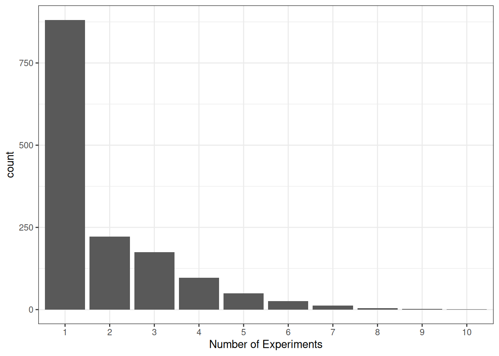
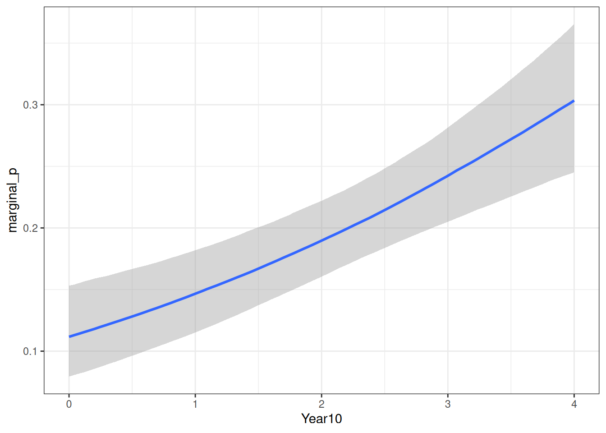
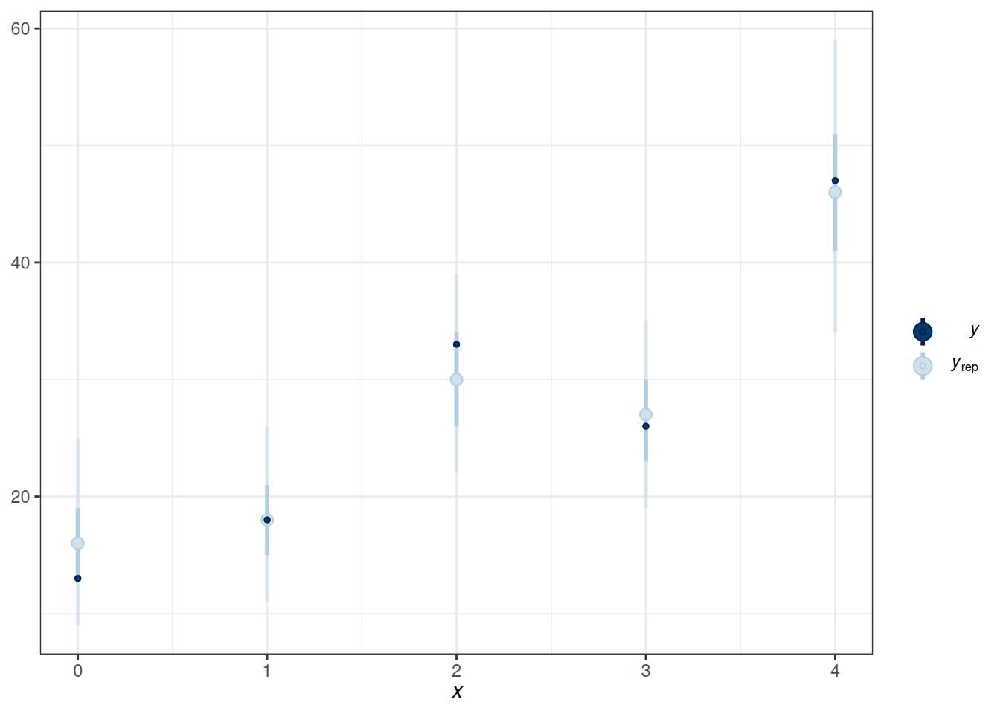
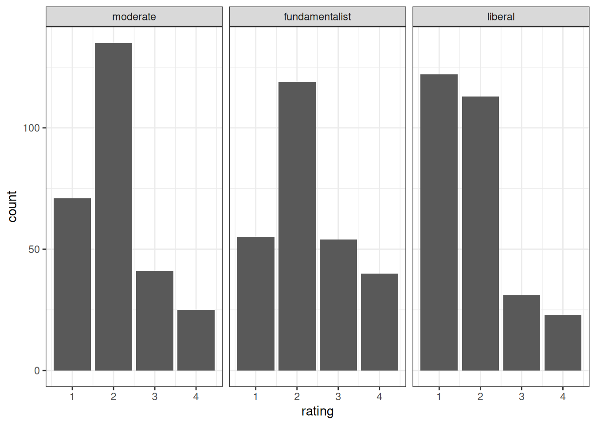
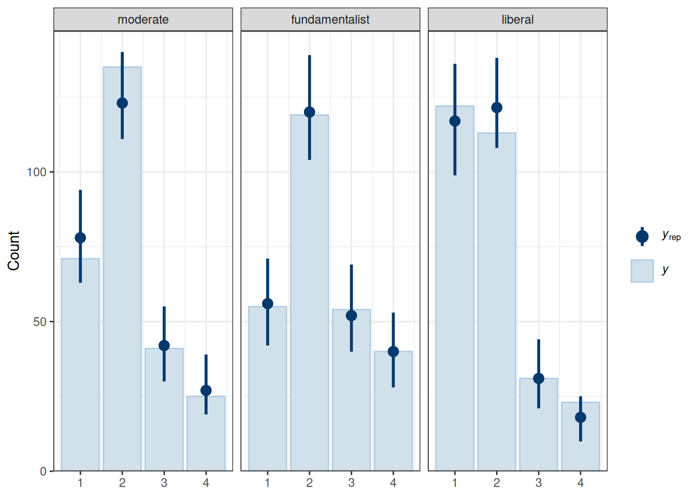
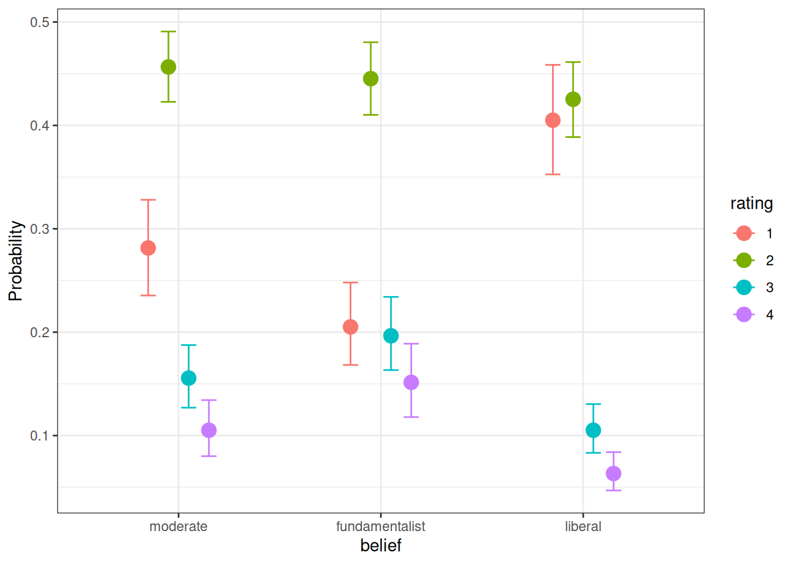

datfile <- here("data", "marginalp.xlsx")
marginalp <- readxl::read_excel(datfile)
# Recode `Field` into a factor
marginalp <- marginalp |>
# Filter out studies without any experiments
filter(`Number of Experiments` >= 1) |>
mutate(Field = factor(Field,
labels = c(
"Cognitive Psychology",
"Developmental Psychology",
"Social Psychology"
)
)) |>
# Rename the outcome
rename(marginal_p = `Marginals Yes/No`)
marginalp <- marginalp |>
mutate(Year10 = (Year - 1970) / 10)
marginalp_dev <- filter(marginalp,
Field == "Developmental Psychology")19 Generalized Linear Model (II)
19.1 Flexible Non-Linear Models
The brms package has a special syntax for non-linear models for more complex relationships. More information can be found in https://cran.r-project.org/web/packages/brms/vignettes/brms_nonlinear.html.
As an example, in the marginalp data, some studies have more than one experiment:
Code
ggplot(marginalp, aes(x = `Number of Experiments`)) +
geom_bar() +
scale_x_discrete(limits = as.character(c(1, 2, 3, 4, 5, 6, 7, 8, 9, 10)))
It seems sensible that the probability of reporting at least one marginally significant result would be higher when there are more experiments. And if the number of experiments increases over time, this variable is a potential confound for the relationship between time and the probability of marginally significant results.
One can instead explicitly incorporate the number of experiments in the model. Assuming that the probability of reporting marginal significant result in one experiment is \(p\), and assume that, within a study, the chance of reporting marginal significant results in different experiments is constant and independent, then the probability of reporting at least one marginal \(p\) value in a study with \(n\) experiments is
\[ 1 - (1 - p_m)^n \tag{19.1}\]
We will see how to incorporate this into brms using the non-linear syntax. But first, let’s use the non-linear syntax to refit our binary logistic model.
19.1.1 Binary Logistic Using the Non-Linear Syntax
Recall that our model can be written as
\[ \begin{aligned} \text{marginal\_p}_i & \sim \mathrm{Bern}(\mu_i) \\ \mu_i & = \mathrm{logit}^{-1}(\beta_0 + \beta_1 \text{Year10}_{i}) \end{aligned} \]
We can translate the above model into the non-linear syntax:
f1 <- bf(
# mu = logit^{-1}(beta0 + beta1 * Year10)
marginal_p ~ inv_logit(b0 + b1 * Year10),
# b0 and b1 are constant numbers
b0 + b1 ~ 1,
# nl = TRUE means we are using the non-linear syntax
nl = TRUE
)Because we already incorporate the inverse link function (inverse logit) in the syntax, we should use family = bernoulli(link = "identity").
# Reft m4 using the non-linear syntax
m4b <- brm(f1,
data = marginalp_dev,
family = bernoulli(link = "identity"),
prior = c(
prior(student_t(4, 0, 1), nlpar = "b1"),
prior(student_t(4, 0, 2.5), nlpar = "b0")
),
file = "10_m4b"
)
m4b Family: bernoulli
Links: mu = identity
Formula: marginal_p ~ inv_logit(b0 + b1 * Year10)
b0 ~ 1
b1 ~ 1
Data: marginalp_dev (Number of observations: 535)
Draws: 4 chains, each with iter = 2000; warmup = 1000; thin = 1;
total post-warmup draws = 4000
Regression Coefficients:
Estimate Est.Error l-95% CI u-95% CI Rhat Bulk_ESS Tail_ESS
b0_Intercept -1.81 0.19 -2.18 -1.45 1.00 1248 1451
b1_Intercept 0.34 0.07 0.21 0.47 1.00 1281 1562
Draws were sampled using sample(hmc). For each parameter, Bulk_ESS
and Tail_ESS are effective sample size measures, and Rhat is the potential
scale reduction factor on split chains (at convergence, Rhat = 1).The results are basically the same as m4 in the previous note, as they are the same model.
19.1.2 Custom Model Incorporating Number of Experiments
Now, we can modify the above model by incorporating Equation 19.1. Just substite \(p_m\) = inv_logit(b0 + b1 * Year10):
f2 <- bf(
marginal_p ~ 1 - (1 - inv_logit(b0 + b1 * Year10))^nexp,
b0 + b1 ~ 1,
nl = TRUE
)# Rename `Number of Experiments`
marginalp_dev$nexp <- marginalp_dev$`Number of Experiments`
m4c <- brm(f2,
data = marginalp_dev,
family = bernoulli(link = "identity"),
prior = c(
prior(student_t(4, 0, 1), nlpar = "b1"),
prior(student_t(4, 0, 2.5), nlpar = "b0")
),
file = "10_m4c"
)We can now plot the model-implied probabilities of marginal significant results over time, for one experiment.
conditional_effects(
m4c,
effects = "Year10",
conditions = data.frame(
nexp = 1
)
)

19.2 Binomial Logistic Regression
Two Equivalent Models
When the probability is assumed equal across trials, the following are equivalent:
- Individual data: Bernoulli
- Grouped data: Binomial
19.2.1 Model
\[ \begin{aligned} \text{marginal\_p}_j & \sim \mathrm{Bin}(N_j, \mu_j) \\ \mathrm{logit}(\mu_j) & = \eta_j \\ \eta_j & = \beta_0 + \beta_1 \text{Year10}_{j} \end{aligned} \]
Priors:
\[ \begin{aligned} \beta_0 & \sim t_3(0, 2.5) \\ \beta_1 & \sim t_4(0, 1) \end{aligned} \]
# Grouping data should only be done for observations with
# the same predicted probabilities
marginalp_dev_grouped <-
marginalp_dev |>
group_by(Year10) |>
summarize(
marginal_p = sum(marginal_p), # number of "successes"
n = n() # number of trials
)m5_bin <- brm(
marginal_p | trials(n) ~ bs(Year10, degree = 1, knots = 3),
data = marginalp_dev_grouped,
family = binomial(link = "logit"),
prior = prior(student_t(4, 0, 1), class = "b"),
# Note: no sigma
seed = 1340,
file = "10_m5_bin"
)pp_check(m5_bin, type = "intervals", x = "Year10")Using all posterior draws for ppc type 'intervals' by default.

19.3 Ordinal Regression
The example here is based on this paper: https://journals.sagepub.com/doi/full/10.1177/2515245918823199. The data come from the 2006 U.S. General Social Survey (GSS), where the codebook can be found at https://www.thearda.com/data-archive?tab=2&fid=GSS2006. The data can be imported from OSF:
The predictor is religious belief, and the outcome is the attitude toward stem cell research:
Recently, there has been controversy over whether the government should provide any funds at all for scientific research that uses stem cells taken from human embryos. Would you say the government . . .
- 1 = Definitely, should fund such research
- 2 = Probably should fund such research
- 3 = Probably should not fund such research
- 4 = Definitely should not fund such research
stemcell |>
ggplot(aes(x = rating)) +
geom_bar() +
facet_wrap(~ belief)

19.4 Model
\[ \begin{aligned} \text{rating}_i & \sim \mathrm{Categorical}(\pi^1_i, \pi^2_i, \pi^3_i, \pi^4_i) \\ \pi^1_{i} & = \mathrm{logit}^{-1}(\tau^1 - \eta_i) \\ \pi^2_{i} & = \mathrm{logit}^{-1}(\tau^2 - \eta_i) - \mathrm{logit}^{-1}(\tau^1 - \eta_i) \\ \pi^3_{i} & = \mathrm{logit}^{-1}(\tau^3 - \eta_i) - \mathrm{logit}^{-1}(\tau^2 - \eta_i) \\ \pi^4_{i} & = 1 - \mathrm{logit}^{-1}(\tau^3 - \eta_i) \\ \eta_i & = \beta_1 \text{fundamentalist}_{i} + \beta_2 \text{liberal}_{i} \end{aligned} \]
Priors:
\[ \begin{aligned} \tau^1, \tau^2, \tau^3 & \sim t_3(0, 2.5) \\ \beta_1 & \sim N(0, 1) \end{aligned} \]
m6 <- brm(
rating ~ belief,
data = stemcell,
family = cumulative(link = "logit"),
prior = prior(std_normal(), class = "b"),
seed = 1340,
file = "10_m6"
)19.4.1 Posterior Predictive Check
pp_check(m6, type = "bars_grouped", group = "belief",
ndraws = 100)

The fit was reasonable.
19.4.2 Plot
conditional_effects(m6, categorical = TRUE)

19.5 Nominal Logistic Regression
Ordinal regression is a special case of nominal regression with the proportional odds assumption.
19.5.1 Model
\[ \begin{aligned} \text{rating}_i & \sim \mathrm{Categorical}(\pi^1_{i}, \pi^2_{i}, \pi^3_{i}, \pi^4_{i}) \\ \pi^1_{i} & = \frac{1}{\exp(\eta^2_{i}) + \exp(\eta^3_{i}) + \exp(\eta^4_{i}) + 1} \\ \pi^2_{i} & = \frac{\exp(\eta^2_{i})}{\exp(\eta^2_{i}) + \exp(\eta^3_{i}) + \exp(\eta^4_{i}) + 1} \\ \pi^3_{i} & = \frac{\exp(\eta^3_{i})}{\exp(\eta^2_{i}) + \exp(\eta^3_{i}) + \exp(\eta^4_{i}) + 1} \\ \pi^4_{i} & = \frac{\exp(\eta^4_{i})}{\exp(\eta^2_{i}) + \exp(\eta^3_{i}) + \exp(\eta^4_{i}) + 1} \\ \eta^2_{i} & = \beta^2_{0} + \beta^2_{1} \text{fundamentalist}_{i} + \beta^2_{2} \text{liberal}_{i} \\ \eta^3_{i} & = \beta^3_{0} + \beta^3_{1} \text{belief}_{i} + \beta^3_{2} \text{liberal}_{i} \\ \eta^4_{i} & = \beta^4_{0} + \beta^4_{1} \text{belief}_{i} + \beta^4_{2} \text{liberal}_{i} \\ \end{aligned} \]
As you can see, it has two additional parameters for each predictor column.
m7 <- brm(
rating ~ belief,
data = stemcell,
family = categorical(link = "logit"),
prior = prior(std_normal(), class = "b", dpar = "mu2") +
prior(std_normal(), class = "b", dpar = "mu3") +
prior(std_normal(), class = "b", dpar = "mu4"),
seed = 1340,
file = "10_m7"
)19.5.2 Model Comparison
msummary(list(`ordinal (proportional odds)` = m6, norminal = m7),
estimate = "{estimate} [{conf.low}, {conf.high}]",
statistic = NULL, fmt = 2)Warning:
`modelsummary` uses the `performance` package to extract goodness-of-fit
statistics from models of this class. You can specify the statistics you wish
to compute by supplying a `metrics` argument to `modelsummary`, which will then
push it forward to `performance`. Acceptable values are: "all", "common",
"none", or a character vector of metrics names. For example: `modelsummary(mod,
metrics = c("RMSE", "R2")` Note that some metrics are computationally
expensive. See `?performance::performance` for details.
This warning appears once per session.| ordinal (proportional odds) | norminal | |
|---|---|---|
| b_Intercept[1] | −0.94 [−1.18, −0.72] | |
| b_Intercept[2] | 1.04 [0.81, 1.28] | |
| b_Intercept[3] | 2.14 [1.86, 2.44] | |
| b_belieffundamentalist | 0.41 [0.12, 0.72] | |
| b_beliefliberal | −0.55 [−0.85, −0.25] | |
| b_mu2_Intercept | 0.63 [0.38, 0.90] | |
| b_mu3_Intercept | −0.57 [−0.94, −0.20] | |
| b_mu4_Intercept | −1.05 [−1.48, −0.65] | |
| b_mu2_belieffundamentalist | 0.12 [−0.29, 0.54] | |
| b_mu2_beliefliberal | −0.69 [−1.06, −0.33] | |
| b_mu3_belieffundamentalist | 0.52 [0.00, 1.04] | |
| b_mu3_beliefliberal | −0.77 [−1.32, −0.24] | |
| b_mu4_belieffundamentalist | 0.70 [0.13, 1.26] | |
| b_mu4_beliefliberal | −0.58 [−1.18, 0.01] | |
| Num.Obs. | 829 | 829 |
| R2 | 0.043 | |
| ELPD | −1019.2 | −1020.9 |
| ELPD s.e. | 15.5 | 15.6 |
| LOOIC | 2038.5 | 2041.8 |
| LOOIC s.e. | 31.1 | 31.2 |
| WAIC | 2038.5 | 2041.8 |